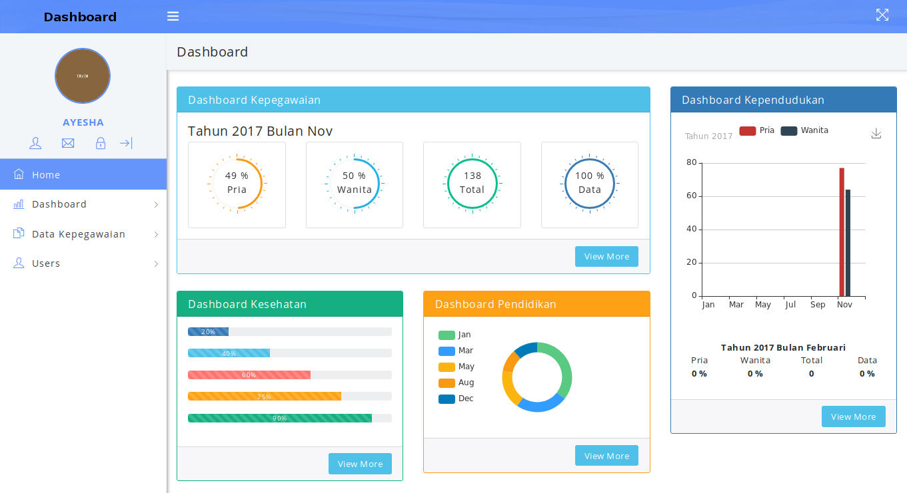
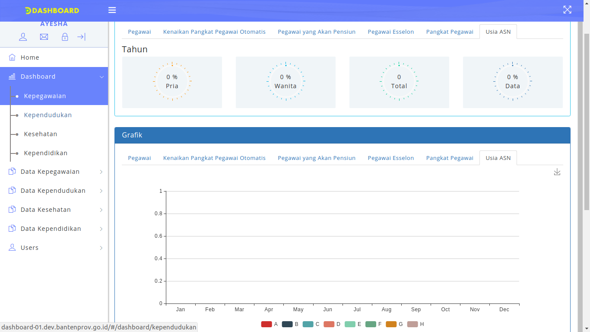
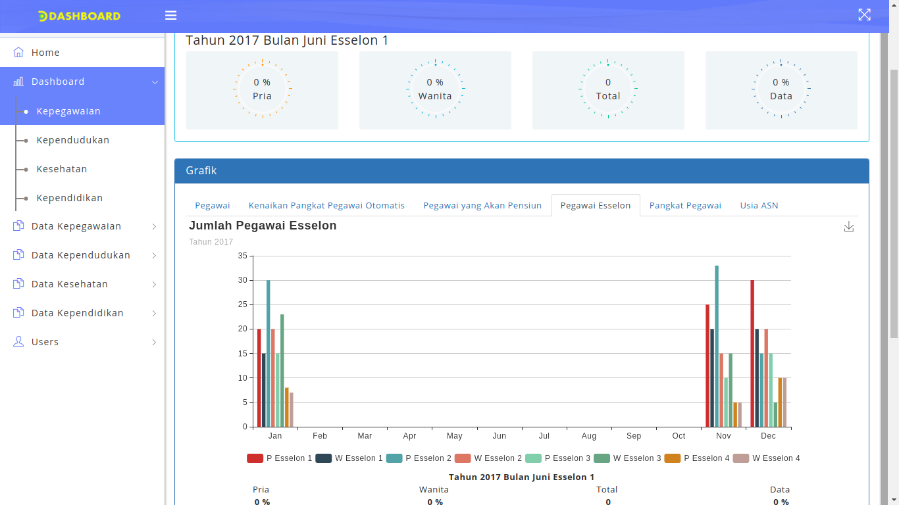
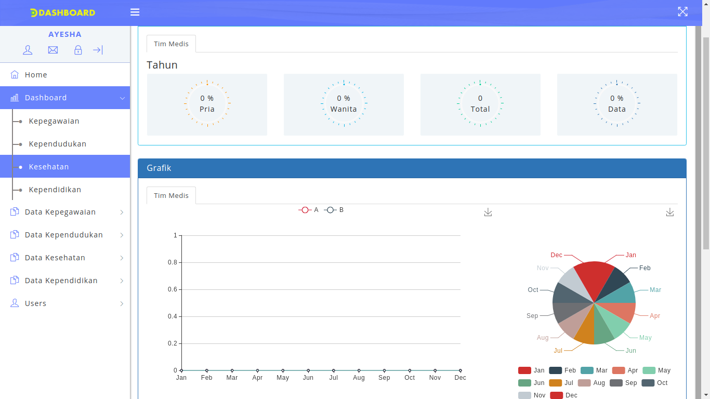
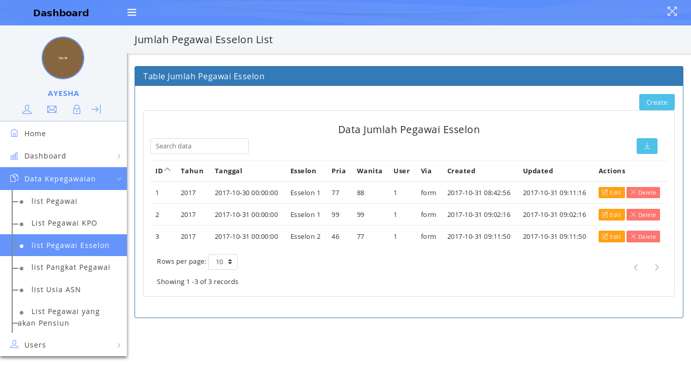
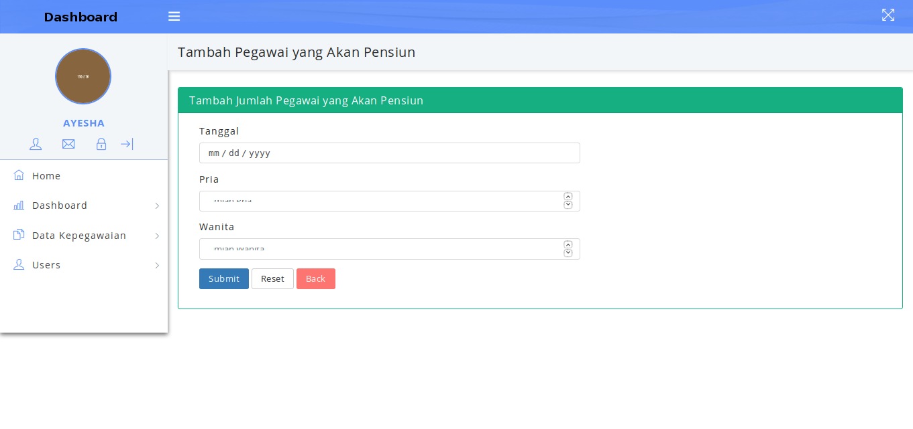
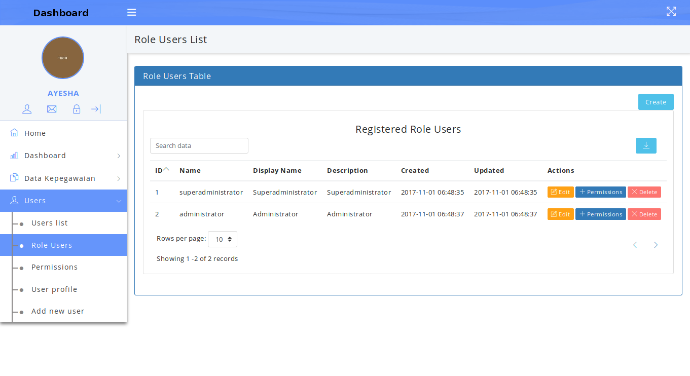

Daftar Isi
- Daftar Isi
- Implementasi Dashboard Pimpinan
- 1. Halaman Depan Dashboard Pimpinan
- 2. Tampilan Login
- 3. Tampilan Awal
- 4. Menu Home
- 5. Tampilam Halaman Utama (Home)
- 6. Dashboard
- 7. Data Kepegawaian
- 8. Data Kependudukan
- 9. Data Kesehatan
- 10. Data Kependidikan
- 11. Data Epormas
- 12. Menu Users
Implementasi Dashboard Pimpinan
Implementasi aplikasi Dashboard Pimpinan merupakan hasil perancangan dan desain dari apliksi Dashboard Pimpinan yang telah dibuat. Didalam implementasi aplikasi ini nantinya akan dijelaskan langkah-langkah penggunaan dari tipa-tiap menu yang ada pada aplikasi Dashboard Pimpinan yang sudah terintegrasi tersebut.
Untuk memulai akses terhadap aplikasi Dashboard Pimpinan. Buka web browser (IE, Mozila Firefox atau yang lainnya) dengan menulis alamat url http://dashboard-01.dev.bantenprov.go.id kemudian tekan Enter pada tombol keyboard atau klik tombol Go pada browser. Akan muncul tampilan halaman depan Dashboard Pimpinan seperti gambar dibawah ini.
1. Halaman Depan Dashboard Pimpinan
Gambar 1. Halaman Depan Dashboard Pimpinan
{kind=link}
2. Tampilan Login
Untuk masuk kedalam aplikasi maka admin perlu untuk login kedalam aplikasi Dashboard Pimpinan dengan mengklik LOGIN seperti gambar dibawah ini:
{kind=link}
Sehingga akan menampilkan tampilan seperti dibawah ini: Gambar 2. Tampilan Login
{kind=link}
Masukkan User Id dan Password, Setelah di isi lengkap dan benar, klik button LOGIN atau tekan tombol Enter pada keyboard. Sehingga akan menampilkan halaman utama sebagai berikut.
3. Tampilan Awal
 Gambar 3. Tampilan Awal
{kind=link}
4. Menu Home
Halaman muka (home) Dashboard Pimpinan Menampilkan 4 grafik:
- Dashboard Kepegawaian
- Dashboard Kependudukan
- Dashboard Kesehatan
- Dashboard Kependidikan
- Dashboard Epormas
Seperti ditunjukan pada gambar berikut ini:
5. Tampilam Halaman Utama (Home)
Gambar 4. Tampilan Halaman Utama
6. Dashboard
Konten Dashboard untuk melihat dashboard apa saja yang sudah terintegrasi dengan Dashboard Pimpinan, Berikut ini adalah Dashboard-Dashboard yang sudah terintegrasi dengan Dashboard Pimpinan :
6.1 Dashboard kepegawaian
Didalam menu dashboard ada beberapa cakupan diantaranya Kepegawaian (yang didalamnya mencakup Jumlah Pegawai, Kenaikan Pangkat Pegawai Otomatis, Pegawai yang Akan Pensiun, Usia ASN, Pegawai Esselon dan Pangkat Pegawai), Kesehatan, .dengan mengklik tombol kepegawaian sistem aplikasi akan menampilkan seperti ditujukan pada gambar dibawah ini:
6.1.1 Prosentase dan Grafik Jumlah Pegawai
 Gambar 5. Tampilan Prosentase dan Grafik Jumlah pegawai
Gambar 5. Tampilan Prosentase dan Grafik Jumlah pegawai
Pada page ini user dapat melihat data Jumlah Pegawai dalam bentuk prosentase dan grafik
6.1.2 Prosentase dan Grafik Kenaikan Pangkat Pegawai Otomatis
 Gambar 6. Tampilan Prosentase dan Grafik Kenaikan Pangkat Pegawai Otomatis
Gambar 6. Tampilan Prosentase dan Grafik Kenaikan Pangkat Pegawai Otomatis
Pada page ini user dapat melihat data Kenaikan Pangkat Pegawai Otomatis dalam bentuk prosentase dan grafik
6.1.3 Prosentase dan Grafik Pensiun Pegawai
 Gambar 7. Tampilan Prosentase dan Grafik Pensin Pegawai
Gambar 7. Tampilan Prosentase dan Grafik Pensin Pegawai
Pada page ini user dapat melihat data Pegawai yang Akan Pensiun dalam bentuk prosentase dan grafik
6.1.4 Prosentase dan Grafik Usia ASN
 Gambar 8. Tampilan Prosentase dan Grafik Usia ASN
{kind=link}
Pada page ini user dapat melihat data Usia Aparatur Sipil Negara (ASN) dalam bentuk prosentase dan grafik
6.1.5 Prosentase dan Grafik Jumlah Pegawai Esselon
 Gambar 9. Tampilan Prosentase dan Grafik Jumlah Pegawai Esselon
{kind=link}
Pada page ini user dapat melihat data Jumlah Pegawai Esselon dalam bentuk prosentase dan grafik
6.1.6 Prosentase dan Grafik Pangkat Pegawai
 Gambar 10. Tampilan Prosentase dan Grafik Pangkat Pegawai
Gambar 10. Tampilan Prosentase dan Grafik Pangkat Pegawai
Pada page ini user dapat melihat data Pangkat Pegawai dalam bentuk prosentase dan grafik
6.2 Dashboard Kependudukan
6.2.1 Prosentase dan Grafik Jumlah Penduduk
 Gambar 11 . Tampilan Prosentase dan Grafik Jumlah Penduduk
Gambar 11 . Tampilan Prosentase dan Grafik Jumlah Penduduk
Pada page ini user dapat melihat data Jumlah Penduduk dalam bentuk prosentase dan grafik
6.3 Dashboard Kesehatan
6.3.1 Prosentase dan Grafik Jumlah Tim Medis
 Gambar 12. Tampilan Prosentase dan Grafik Jumlah Tim Medis
{kind=link}
Pada page ini user dapat melihat data Jumlah Tim Medis dalam bentuk prosentase dan grafik
6.4 Dashboard Kependidikan
6.4.1 Prosentase dan Grafik Jumlah Tenaga Pendidik
 Gambar 13. Tampilan Prosentase dan Grafik Jumlah Tenaga Pendidik
Gambar 13. Tampilan Prosentase dan Grafik Jumlah Tenaga Pendidik
Pada page ini user dapat melihat data Jumlah Tenaga Pendidik dalam bentuk prosentase dan grafik
6.5 Dashboard Epormas
6.5.1 Prosentase dan Grafik Jumlah Laporan
 Gambar 14. Tampilan Prosentase dan Grafik Jumlah Laporan
Gambar 14. Tampilan Prosentase dan Grafik Jumlah Laporan
Pada page ini user dapat melihat data Jumlah Laporan dalam bentuk prosentase dan grafik
7. Data Kepegawaian
Menu Data Kepegawaian adalah yang dipergunakan untuk Superadmin dan Admin, dimana bisa untuk Input, Hapus, Edit, Update, View data yang ada diseluruh Dinas Provinsi Banten. Didalam Menu Data Kepegawaian ada beberapa bagian menu, diantaranya adalah dengan tampilan gambar seperti dibawah ini:
7.1 List Pegawai
 Gambar 15. tampilan List Pegawai
Gambar 15. tampilan List Pegawai
Didalam page terdapat list Pegawai yang terdapat pada aplikasi Dashboard Pimpinan. Didalam page ini admin dapat menambahkan Pegawai dengan cara mengklik tombol “Create”, admin juga dapat mengedit dan mendelete data pada page ini.
7.1.1 Form Tabel Tambah Jumlah Pegawai
Gambar 16. Tampilan Form Tabel Tambah Jumlah Pegawai
{kind=link}
Didalam page ini terdapat form input pegawai yang berisi beberapa field untuk menambahkan pegawai pada aplikasi. Jika sudah mengisi semua field admin dapat memilih tombol “submit” untuk menambahkan pegawai, tombol “reset” untuk membersihkan field menjadi kosong lagi atau tombol “back” untuk membatalkan menambahkan pegawai.
7.2 List Pegawai KPO
 Gambar 17. Tampilan List Pegawai KPO
Gambar 17. Tampilan List Pegawai KPO
Didalam page terdapat list Pegawai KPO yang terdapat pada aplikasi Dashboard Pimpinan. Didalam page ini admin dapat menambahkan Pegawai KPO dengan cara mengklik tombol “Create”, admin juga dapat mengedit dan mendelete data pada page ini.
7.2.1 Form Tabel Tambah Pegawai KPO (Kenaikan Pangkat Otomatis)
 Gambar 18. Tampilan Form Tabel Tambah Pegawai KPO
Gambar 18. Tampilan Form Tabel Tambah Pegawai KPO
Didalam page ini terdapat form input pegawai KPO yang berisi beberapa field untuk menambahkan pegawai KPO pada aplikasi. Jika sudah mengisi semua field admin dapat memilih tombol “submit” untuk menambahkan pegawai KPO, tombol “reset” untuk membersihkan field menjadi kosong lagi atau tombol “back” untuk membatalkan menambahkan pegawai KPO.
7.3 List Pegawai Esselon
 Gambar 19. Tampilan List Pegawai Esselon
{kind=link}
Didalam page terdapat list Pegawai Esselon yang terdapat pada aplikasi Dashboard Pimpinan. Didalam page ini admin dapat menambahkan Pegawai Esselon dengan cara mengklik tombol “Create”, admin juga dapat mengedit dan mendelete data pada page ini.
7.3.1 Form Tabel Tambah Jumlah Pegawai Esselon
Gambar 20. Tampilan Form Tabel Tambah Jumlah Pegawai Esselon
{kind=link}
Didalam page ini terdapat form input pegawai esselon yang berisi beberapa field untuk menambahkan pegawai esselon pada aplikasi. Jika sudah mengisi semua field admin dapat memilih tombol “submit” untuk menambahkan pegawai esselon, tombol “reset” untuk membersihkan field menjadi kosong lagi atau tombol “back” untuk membatalkan menambahkan pegawai esselon.
7.4 List Usia ASN (Aparatur Sipil Negara)
 Gambar 21. Tampilan List usia ASN
Gambar 21. Tampilan List usia ASN
Didalam page terdapat list usia ASN yang terdapat pada aplikasi Dashboard Pimpinan. Didalam page ini admin dapat menambahkan usia ASN dengan cara mengklik tombol “Create”, admin juga dapat mengedit dan mendelete data pada page ini.
7.4.1 Form Tabel Tambah Usia ASN (Aparatur Sipil Negara)
Gambar 22. Tampilan Form Tabel Tambah Usia ASN
{kind=link}
Didalam page ini terdapat form input usia ASN yang berisi beberapa field untuk menambahkan usia ASN pada aplikasi. Jika sudah mengisi semua field admin dapat memilih tombol “submit” untuk menambahkan usia ASN, tombol “reset” untuk membersihkan field menjadi kosong lagi atau tombol “back” untuk membatalkan menambahkan usia ASN.
7.5 List Pegawai Yang Akan Pensiun
 Gambar 23. Tampilan List Pegawai yang akan Pensiun
Gambar 23. Tampilan List Pegawai yang akan Pensiun
Didalam page terdapat list pegawai yang akan pensiun yang terdapat pada aplikasi Dashboard Pimpinan. Didalam page ini admin dapat menambahkan pegawai yang akan pensiun dengan cara mengklik tombol “Create”, admin juga dapat mengedit dan mendelete data pada page ini.
7.5.1 Form Tabel Tambah Jumlah Pegawai Yang Akan Pensiun
 Gambar 24. Tampilan Form Tabel Tambah Jumlah Pegawai yang akan Pensiun
{kind=link}
Didalam page ini terdapat form input pegawai yang akan pensiun yang berisi beberapa field untuk menambahkan pegawai yang akan pensiun pada aplikasi. Jika sudah mengisi semua field admin dapat memilih tombol “submit” untuk menambahkan pegawai yang akn pensiun, tombol “reset” untuk membersihkan field menjadi kosong lagi atau tombol “back” untuk membatalkan menambahkan pegawai yang akan pensiun.
8. Data Kependudukan
Menu Data Kependudukan adalah yang dipergunakan untuk Superadmin dan Admin, dimana bisa untuk Input, Hapus, Edit, Update, View data yang ada diseluruh Dinas Provinsi Banten. Didalam Menu Data Kependudukan ada beberapa bagian menu, diantaranya adalah dengan tampilan gambar seperti dibawah ini:
8.1 List Penduduk
Gambar 25. Tampilan List Penduduk
{kind=link}
Didalam page terdapat list penduduk yang terdapat pada aplikasi Dashboard Pimpinan. Didalam page ini admin dapat menambahkan penduduk dengan cara mengklik tombol “Create”, admin juga dapat mengedit dan mendelete data pada page ini.
8.1.1 Form Tabel Tambah Penduduk
Gambar 26. Tampilan Form Tabel Tambah Penduduk
{kind=link}
Didalam page ini terdapat form input penduduk yang berisi beberapa field untuk menambahkan penduduk pada aplikasi. Jika sudah mengisi semua field admin dapat memilih tombol “submit” untuk menambahkan penduduk, tombol “reset” untuk membersihkan field menjadi kosong lagi atau tombol “back” untuk membatalkan menambahkan penduduk.
9. Data Kesehatan
Menu Data Kesehatan adalah yang dipergunakan untuk Superadmin dan Admin, dimana bisa untuk Input, Hapus, Edit, Update, View data yang ada diseluruh Dinas Provinsi Banten. Didalam Menu Data Kependudukan ada beberapa bagian menu, diantaranya adalah dengan tampilan gambar seperti dibawah ini:
9.1 List Tim Medis
Gambar 27. Tampilan List Tim Medis
{kind=link}
Didalam page terdapat list tim medis yang terdapat pada aplikasi Dashboard Pimpinan. Didalam page ini admin dapat menambahkan tim medis dengan cara mengklik tombol “Create”, admin juga dapat mengedit dan mendelete data pada page ini.
9.1.1 Form Tabel Tambah Tim Medis
Gambar 28. Tampilan Form Tabel Tambah Tim Medis
Didalam page ini terdapat form input tim medis yang berisi beberapa field untuk menambahkan tim medis pada aplikasi. Jika sudah mengisi semua field admin dapat memilih tombol “submit” untuk menambahkan tim medis, tombol “reset” untuk membersihkan field menjadi kosong lagi atau tombol “back” untuk membatalkan menambahkan tim medis.
10. Data Kependidikan
Menu Data Kependidikan adalah yang dipergunakan untuk Superadmin dan Admin, dimana bisa untuk Input, Hapus, Edit, Update, View data yang ada diseluruh Dinas Provinsi Banten. Didalam Menu Data Kependudukan ada beberapa bagian menu, diantaranya adalah dengan tampilan gambar seperti dibawah ini:
10.1 List Pendidik
Gambar 29. Tampilan List Pendidik
{kind=link}
Didalam page terdapat list pendidik yang terdapat pada aplikasi Dashboard Pimpinan. Didalam page ini admin dapat menambahkan pendidik dengan cara mengklik tombol “Create”, user juga dapat mengedit dan mendelete data pada page ini.
10.1.1 Form Tabel Tambah Pendidik
Gambar 30. Tampilan List Form Tabel Tambah Pendidik
{kind=link}
Didalam page ini terdapat form input pendidik yang berisi beberapa field untuk menambahkan pendidik pada aplikasi. Jika sudah mengisi semua field admin dapat memilih tombol “submit” untuk menambahkan pendidik, tombol “reset” untuk membersihkan field menjadi kosong lagi atau tombol “back” untuk membatalkan menambahkan pendidik.
11. Data Epormas
Menu Data Epormas adalah yang dipergunakan untuk Superadmin dan Admin, dimana bisa untuk Input, Hapus, Edit, Update, View data yang ada diseluruh Dinas Provinsi Banten. Didalam Menu Data Kependudukan ada beberapa bagian menu, diantaranya adalah dengan tampilan gambar seperti dibawah ini:
11.1 List Laporan
Gambar 31. Tampilan List Laporan
{kind=link}
Didalam page terdapat list laporan masyarakat yang terdapat pada aplikasi Dashboard Pimpinan. Didalam page ini admin dapat menambahkan laporan dengan cara mengklik tombol “Create”, admin juga dapat mengedit dan mendelete data pada page ini.
11.1.1 Form Tabel Tambah Laporan
Gambar 32. Tampilan Form Tabel Tambah Laporan
{kind=link}
Didalam page ini terdapat form laporan yang berisi beberapa field untuk menambahkan laporan pada aplikasi. Jika sudah mengisi semua field admin dapat memilih tombol “submit” untuk menambahkan pendidik, tombol “reset” untuk membersihkan field menjadi kosong lagi atau tombol “back” untuk membatalkan menambahkan laporan.
12. Menu Users
Menu Users adalah tampilan aplikasi yang dipergunakan untuk Superadmin dan Admin, di mana bisa untuk Input, Hapus, Edit, Update, View data yang ada, dengan menekan atau klik tombol create akan tampil form tabel untuk penambahan data. Didalam menu users ada beberapa bagian menu, diantaranya adalah dengan tampilan gambar seperti dibawah ini:
12.1. Users List
 Gambar 33. Tampilan User List
Gambar 33. Tampilan User List
Didalam page terdapat list user yang terdapat pada aplikasi Dashboard Pimpinan. Didalam page ini admin dapat menambahkan role user dengan cara mengklik tombol “Create”, dan sistem aplikasi akan menampilkan gambar di bawah ini.
12.1.1. Form Tabel Add New User
 Gambar 34. Tampilan Form Tabel Add New User
Gambar 34. Tampilan Form Tabel Add New User
Didalam page ini terdapat form input new user yang berisi beberapa field untuk menambahkan New User pada aplikasi. Jika sudah mengisi semua field admin dapat memilih tombol “submit” untuk menambahkan user, tombol “reset” untuk membersihkan field menjadi kosong lagi atau tombol “back” untuk membatalkan menambahkan user.
12.2. List Role User
 Gambar 35. Tampilan List Role User
{kind=link}
Didalam page terdapat list role user yang terdapat pada aplikasi Dashboard Pimpinan. Didalam page ini admin dapat menambahkan role user dengan cara mengklik tombol “Create”, dan sistem aplikasi akan menampilkan gambar di bawah ini.
12.2.1. Form Tabel Add Role User
Gambar 36. Tampilan Form Tabel Add Role User
{kind=link}
Didalam page ini terdapat form input role user yang berisi beberapa field untuk menambahkan New Role User pada aplikasi. Jika sudah mengisi semua field admin dapat memilih tombol “submit” untuk menambahkan role user, tombol “reset” untuk membersihkan field menjadi kosong lagi atau tombol “back” untuk membatalkan menambahkan role user.
12.3. List Permissions
 Gambar 37. Tampilan List Permissions
Gambar 37. Tampilan List Permissions
Didalam page terdapat list permissions yang terdapat pada aplikasi Dashboard Pimpinan. Didalam page ini admin dapat menambahkan permissions dengan cara mengklik tombol “Create”, dan sistem aplikasi akan menampilakan gambar di bawah ini.
12.3.1 Form Tabel Add Permissions
Gambar 38. Tampilan Form Tabel Add Permissions
{kind=link}
Didalam page ini terdapat form input new permissions yang berisi beberapa field untuk menambahkan New Permissions pada aplikasi. Jika sudah mengisi semua field admin dapat memilih tombol “submit” untuk menambahkan permissions, tombol “reset” untuk membersihkan field menjadi kosong lagi atau tombol “back” untuk membatalkan menambahkan permissions.
12.4 Profile User
Gambar 39. Tampilan Profile User Didalam page ini admin dapat melihat list user yang terdaftar diaplikasi Dashboard Pimpinan.
{kind=link}